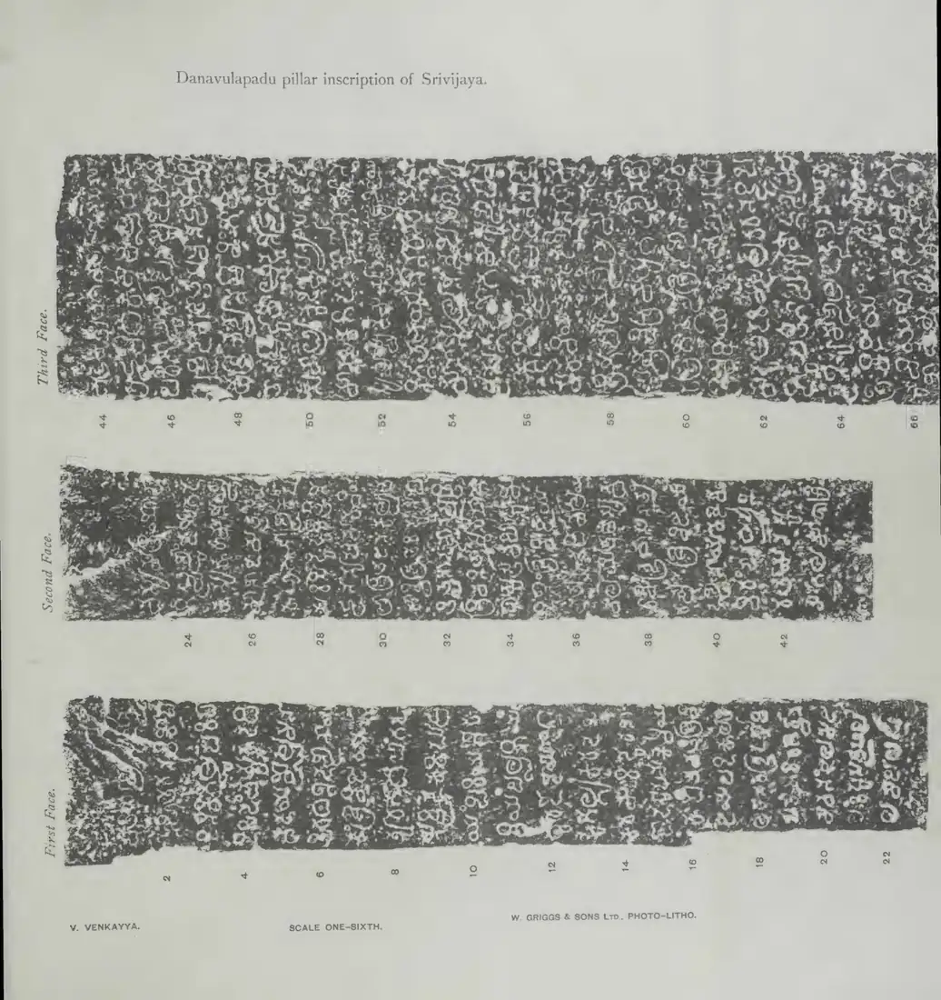

Dānavulapādu pillar inscription of Śrīvijaya
DANAVULAPADU PILLAR INSCRIPTION OF SRIVIJAYA.
BY H. KRISHNA SASTRI, B.A.
The subjoined record2 is engraved on the three faces of one of the Jaina pillars, discovered by the Superintendent, Archaeological Survey, Madras, at Dānavulapādu (in the Jammalmadugu tāluka of the Cuddapah District) in 1903, when he made extensive excavations there, on the sandy bank of the river Pennar. The results of Mr. Rea's excavations are published in the Director General's Annual Report for 1905-6, pp. 120 to 127, which include a complete description with a half-tone picture (fig. 7) of the sculptures in three panels on one of the broad faces of the pillar (p. 124) and an English translation of the inscription on two of its narrow faces (p. 124 f.)
By way of supplementing what has been already stated by Mr. Rea, I append, with the kind permission of the editor, a full text of the record, which is not given in the Annual and the translation of a portion of the inscription, which is also omitted there, by some mistake.3
1 Since writing the above Mr. Venkayya has informed me that the quoted day of the solar month Dhanus may be, not “11” but “19.” On this basis I have again examined the date. It is not correct for the reign of M. Kulaśēkhara I. For A.D. 1321 the eighth year of M. Kulaśēkhara II., the details would be correct for the 18th, but not for the 19th Dhanus. At mean sunrise on Tuesday, December 15, A.D. 1321, which was the 18th day of Dhanus, the tenth tithi of the second fortnight expired 3 h. 16 m. after mean sunrise; the nakshatra being at mean sunrise, Svāti by the equal space system. It ended 6 h. 18 m. later by that system. But by Garga it had ended 5 h. 54 m., and by the Brahma-Siddhānta 10 h. 2 m. before mean sunrise, Viśākhā being current at that moment. On the 19th Dhanus Viśākhā was current by all systems. I think the date is probably genuine, but that the 19th of the solar month was quoted in error for the 18th.
2 No. 333 of the Madras Epigraphical collection for 1905.
3 The portion omitted in the Annual is the “third face” (ll. 44 to 67) of the pillar. On p. 125, however, Mr. Rea adds in continuation the translation of a later inscription of the 14th century A.D. in the passage commencing: “The second reads . . . . . prosperity,” and connects it with the subjoined pillar record which is at least 4 centuries earlier. It may be noted that the later record translated by Mr. Rea, was also discovered in the same locality (No. 336 of the Madras Epigraphical collection for 1905).
The ink-impressions from which the accompanying plate has been prepared, were taken under my direct supervision from the original pillar which is now preserved in the Madras Museum, along with the other antiquities of Dānavulapāđu.
The record is not dated. But the Kanarese characters in which it is written may be referred to the period between the 10th and 11th centuries A.D. The alphabet bears a strong resemblance in certain details (e.g. in the distinction made between long and short i and in the adding of the rēpha to a consonant ending in i) to that of the two Noļamba records from Dharmapuri published by me,1 but is exactly similar in many respects to those of the Ātakūr inscription of the time of Krishqa III.2 and of the epitaph of Mārasimha II.3 of the 10th century A.D. The symbol for long ū affixed to the consonant m is different in form from that used in other cases; compare e.g. mū of ripusamūha in l. 21 and of mūrti in l. 32, with nū of =anūna- in l. 51 and bhū of bhū-manđaladoļ in l. 64. The final forms of m (ll. 22 and 48), n (l. 39) and ļ (ll. 50 and 52), the cursive form of the consonant kh (l. 52) and the use of the Draviđian ļ (ll. 8, 24, 50, 52) and r (ll. 12, 48, 49 twice, 56, 62) may also be specially noted. The record consists of 11 verses of which vv. 3, 5 and 6 are in the Sanskrit language (the first being in the Saŋkīrnaka(?)4 and the second two, in the Āryā-giti metre) and the rest in Kanarese (in the Kanda metre). Lines 65 to 67 are in Kanarese prose, while the invocatory and benedictory phrases (ll. 44 and 43) are in Sanskrit.
The order in which the three written faces of the epigraph have to be read presents some difficulty. The broader face which begins with a benedictory clause and ends with the writer's name, must be taken to be a complete record by itself. The two narrow faces which contain the eulogy of Šrivijaya do not begin with any auspicious word, phrase or verse, but end with the usual maingala-mahā-śrīḥ. Apparently, the inscription was meant to be divided into two parts, the first of which, comprising the two narrow faces of the pillar, began with a description of the military prowess of the danđanāyaka Šrivijaya, to whom in the body of the record are applied the surnames Ariviņgōja (v. 7), Anupamakavi (vv. 2, 4, 9 and l. 65 f.) and perhaps also Sarvavikramatuņga (v. 10). Of the three Sanskrit verses included in this portion of the record, two (vv. 5 and 6) are addressed to Šrivijaya and express the wish that he might live long to rule the circle of the earth under orders of king Indra. The third verse while describing his prowess in highly poetical language, incidentally mentions Baļi-kula, the family to which Šrivijaya belonged and the king Narēndra of whom he was the general (danđādhi-pati). The second part of the inscription, evidently the more important of the two, is written on one of the broad faces of the pillar and opens with an invocatory clause which proclaims glory to the prosperous doctrine of the Jina. The first three verses (7 to 9) on this face appear to suggest that Šrivijaya voluntarily resigned this world and took sainnyāsa in order to attain eternal bliss. The next two verses are again in praise of Šrivijaya's military prowess,
1 Above, pp. 54 to 70 and Plate.
2 Ibid. Vol. VI. pp. 50 to 57 and Plate.
3 Ibid. Vol. V. pp. 151 to 180 and Plate.
4 According to Gaņgādāsa's Chhandōmaļjarī (Ch. V. 15) Gīti is a verse whose second half corresponds to the first half of an Āryā (i.e. contains 30 mātrās), the first half presumably being the same as that of the Āryā. Āryā-Gīti, again, on the same authority (ibid. 21) has both its halves corresponding to the first half of an Āryā with an additional guru (i.e. contains 32 mātrās). The metre, however, of the verse under consideration, whose scheme is 32 mātrās in the first half and 30 in the second, is neither Gīti nor Āryā-Gīti as described by Gaņgādāsa. It probably corresponds to the Saŋkīrnaka mentioned in Dr. Kittel's edition of Nāgavarma's Chhandas (Ch. IV. 292). Dr. Kittel interprets the scheme of the metre as 32 and 27 (Chhandas, p. 93). Nāgavarma's definition may admit of an explanation which yields 32 and 30 for the scheme of the Saŋkīrnaka and thus correspond to that of v. 3 of the subjoined inscription. Nāgavarma's v. 292 may be translated thus: "If the first half (a-apar-ārdha?) of an Ārya (i.e. of 30 mātrās) unites with the first half of a Kanda in the order mentioned (i.e. 32, in the first and 30 in the second), then O! lotus-faced one! the metre becomes the Saŋkīrnaka as stated by Kavirājaharinsa (i.e. Nāgavarma)."
and ll. 65 to 67 state that the writer of the record was Guṇavarma, the clerk (sēnabōva) of Anupamakavi.
It thus appears from an examination of the contents that the only name in the record which may be of historical interest is that of king Indra (or Narēndra) whose subordinate was the daṇḍanāyaka Śrīvijaya. And, to judge from the characters, king Indra will have to be identified with the Rāshṭrakūṭa Nityavarsha-Indra III, for whom we have the dates A.D. 915 and 916-7, or with Indra IV, the grandson of Krīshṇa III, who died in A.D. 982.1 Before attempting to decide which of the two kings could be intended here, it may be useful to mention the existence of a record of the Rāshṭrakūṭa king Nityavarsha in the Jaina ruins of Dānavulapādu, quite close to where the subjoined pillar was dug up.2 It is engraved round the rim of a stone pedestal and consists of a single Sanskrit verse which has been translated on p. 121 f. of the Director General's Annual for 1905-6. Here, again, it is doubtful if Nityavarsha is identical with Indra III. or Khoṭṭiga, both of whom bore that surname. As, however, the pedestal record and the subjoined pillar inscription are found in the same ruins and the characters, except for the flourishes used in the former, are almost of the same type, there is a strong presumption in favour of identifying Nityavarsha of the pedestal record with king Indra of the Śrīvijaya inscription and of assigning both the epigraphs to the time of Nityavarsha Indra III, i.e. to the beginning of the 10th century A.D. In support of this identification it may be stated that in verse 3 of the subjoined record, Śrīvijaya is stated to have been the commander of the forces of Narēndra. The context requires us here, to interpret narēndra not as a general synonym for 'king,' but as a proper name. Dr. Fleet in dealing with the appellations of the Rāshṭrakūṭa kings,3 has drawn attention to the honorific Narēndradēva with which the surname Nityavarsha of Indra III. occurs combined, in the Nausāri grants. Although the word narēndra (or narēndradēva) may admit of the translation 'His Majesty' as Dr. Fleet has taken it, still in the light of what has been stated above, it appears to me that Narēndra must be taken, at least in the subjoined record, as a hitherto unknown surname of Indra III.
Daṇḍanāyaka Śrīvijaya is not mentioned in any published inscriptions. His identification, if satisfactorily made out, would be of much interest to students of Kanarese literature; for, his surnames Arīvingōja4 and Anupamakavi5 have, apparently, a special reference to his literary acquirements; while Sarvavikramatunga indicates his military prowess.6 Two persons of literary fame both bearing the name Śrīvijaya are known to Kanarese literature. The colophon at the end of each of the three chapters of the Kavirājamārga describes that work as having been the production of Śrīvijaya on the lines laid down by king Nṛipatunga. This king who is also called Atiśayadhavaḥa and Amōghavarsha in the body of the work, has been identified with the Rāshṭrakūṭa Amōghavarsha I. (A.D. 814-5 to 877-8). If the Kavirājamārga was actually written by Śrīvijaya, who is stated to have been the court poet of Nṛipatunga and to have borne the surnamo Kaviśvara, his time would fall into the beginning of the ninth century A.D. Another Śrīvijaya is referred to in the body of the same work (Kavirājamārga) as an earlier author whose writings were looked upon as the standard type of
1 Dr. Fleet's Dyn. Kan, Distr. p. 386, Table.
2 No. 331 of the Madras Epigraphical collection for 1905.
3 Ep. Ind. Vol. VI. p. 176.
4 The word literally means 'the teacher of knowledge.' A similar title in Kannaḍa literature is Negaļtegōja assumed by Nāgavarma the author of the Chhandas; see the Karnāṭaka-Kavicharite by Messrs. R. Narasimhachar, M.A., M.R.A.S., and S. G. Narasimhachar, Vol. I. pp. 46 and 50.
5 I.e. 'the matchless poet;' compare the titles Kavitāgupārnava of Pampa, Kavirājaharnsa of Nāgavarma and Kaviratna and Kavichakravarti of Ranna.
6 We learn from literature that the Kannaḍa poets Pampa, Chāvuṇdarāya and Nāgavarma were also once in military service and had established their names on the battle-field.
Kanarese poetry at the time of Nripatunga. These two Śrīvijayas who belong, one to the 9th century A.D. and the other to some still earlier period, cannot in any way be connected with the daṇḍanāyaka Śrīvijaya of the Dānavulapāḍu record whose time, as stated already, could have been only about the beginning of the tenth century A.D.
Further, we know of a fourth Śrīvijaya mentioned in the Śravaṇa-Belgoła epitaph of Mallishēna.1 He was one of the Jaina teachers of great learning who succeeded Hēmasēna and a contemporary of an unspecified Gaṅga king. An inscription dated Śaka 999 (=A.D. 1077-78) at Humcha in the Shimoga District,2 apparently refers to Satyavākya Rakkasa-Gaṅga, a brother's son of Nołambakulāntaka Mārasimha II. and to his contemporary, the Jaina teacher Śrīvijaya. It is not unlikely that this Rakkasa-Gaṅga is the unspecified Gaṅga king mentioned above and is identical with the Rakkasa referred to in Nos. 133 and 134 of Professor Kielhorn's List of Southern Inscriptions. Consequently, the time of the Jaina teacher Śrīvijaya whose disciple Rakkasa-Gaṅga was, may be placed roughly between Śaka 899 (=A.D. 977), the date of the Peggu-ūr inscription of Rāchamalla II. and Śaka 999 (=A.D. 1077-78), the date of the Humcha record. But there is nothing to show that the Jaina teacher Śrīvijaya of the Mallishēna epitaph was first a layman in the military service of the Rāshṭrakūta king Indra III., and that he subsequently joined the order of ascetics. Consequently, the Śrīvijaya of the Dānavulapāḍu record, is perhaps also different from the Jaina teacher Śrīvijaya, though possibly he was contemporaneous with him, and flourished in the tenth century A.D.
It may be remarked, finally, that, like the famous Gaṅga general Chāmuṇdarāja or Chāvuṇdarāya who served the Western Gaṅga sovereigns Mārasimha II. and Rāchamalla II. and largely patronised Jaina literature and religion, the daṇḍanāyaka Śrīvijaya was unsurpassed in the military art as in the literary, patronised Jainism and resigned the world in the end, as a pious Jaina, in order to seek salvation. The picture of a rider on horseback followed by an umbrella bearer which is depicted in the lowest panel on one of the four faces of the pillar is perhaps meant to represent the general Śrīvijaya marching against his enemy on the battle field. It must also be noted that the demi-god Brahma-yaksha in Jaina iconography is figured as riding on a horse.3
Balīkula,4 the family to which Śrīvijaya belonged, and Guṇavarma5 the clerk (sēnabōva) who wrote (i.e. composed ?) the text of the record, I am unable to identify.
TEXT.6
First Face.
- 1 Patiya besadinda-
- 2 7[m]=ahitaran=ati-kōpa-
- 3 din=ikki geldu paripā-
- 4 li[s]idam [|*] chatur-udadhi-
- 5 vaļayam=ellaman=a-
- 6 tirathen=ī daṇḍa[n]āya-
- 7 kam Śrīvijayam8 [|| 1*]
1 Above, Vol. III. p. 188.
2 Epigraphia Carnatica, Vol. VIII. Nr. No. 35.
3 See Ind. Ant. Vol. XXXII. p. 463 and Plate iv.
4 The Kannaḍa poet Ranna who flourished in the 10th century A.D. was a Jaina descendant of the Bałegārakula and a protègé of Chāvuṇdarāya. It is doubtful if Bałegārakula could, in any way, be connected with Balīkula.
5 A poet Guṇavarma, who may be referred to this period, is mentioned in the Karnāṭaka-Kavicharite, p. 63.
6 From two sets of ink-impressions and the original pillar.
7 The syllable in brackets is more like na than ma.
8 The indistinct symbol at the end of line 7 may be a flower like the one in 1. 65, below.
8 Turaga-dhaļamgaļa-
9 n=ođđida kari-ghaťe-
10 yain piriya-nera-
11 [v]iyań ball-aniyań [|*]
12 dhurad=eđey[o!=i]ri-
13 du gelguń karad-a[si]
14 karam=aridu raṇa-
15 doļ=Anupamakaviya [|| 2*]
16 Kupitavati Šrivi-
17 jayē Baļikula-ti-
18 lak[ē] Narēndra-daņđādhi-
19 patau [|*] girir=agi[ri*]r=vvana-
20 m=avanań jalam=aja-
21 lań ripu-sa[mū]ha-ba-
22 lam=abala[m |] [3*]
Second Face.1
23 Vasumatiy=oļa-
24 g=iļd=eņta[m de]segaļa
25 kusukuruman=eydi
26 māṇade mattań | [B]i[sa]=2
27 ruha-garbh-āņđakkań pa-
28 sarisiduda [ki]rtti ne-
29 ťtan=Anupamakaviya [|| 4*]
30 Āšrita-jana-kalpa-ta-
31 ru[r]=vvišruta-ri[p]u-nṇipa-
32 3ti-tṇipa-davānaļa-mū[r]tti[h] [|*]
33 Šri-vanitā-Smara-pāśah4
34 pātus=tava bāhu5 mē-
35 diniń Šrivijayā(ya) [|| 5*]
36 Chatur-udadhi-valaya-
37 valayita-vasundha-
38 rām-Indra-[ś]āsanāt=sań-
39 raksha[n |] Šrivijaya
40 Daņđanāyaka [ji]va
41 chirań dāna-dharmma-ni-
42 rata-manaska [|| 6*]
43 Maṅgala-mā(ma)hā-šrih [||*]
1 This would actually be the third face—the second on the pillar being occupied by sculptures in three panels, see above, p. 147.
2 The syllables bisa are corrected from vana.
3 The syllable ļa of davānaļa is written between two cross marks below the line, the omission being indicated by a similar cross mark made over the letter na.
4 The visarga at the end of the line appears to have been changed into an anusvāra; the lower dot of the visarga is, however, still faintly visible on the stampage.
5 The order of the words here is wrong. It is evident that the author must have intended pāśō bāhus=tava pātu; for, otherwise, the word bāhu, which is not of the neuter gender, will have to be altered into bāhur=mē,° in which case the metre would be faulty.
Third Face.1
| 44 | Bhadram=astu bhagavatē [J]ina-śāsanā[ya] [||*] |
| 45 | Atṭavidha-karmmam=ellaman=atṭu[m]- |
| 46 | bari-goṇḍu koḍipe[n=eīn]bude ba[g]eyi- |
| 47 | m[|*] [pu]ttidan=udātta-sat[t*]vaīn netṭane vibu- |
| 48 | db[ē]ndra-vandyan=Arivingōja[m ||] [7*] |
| 49 | Tān=aridu t[ora]du netṭane mān[i]- |
| 50 | sa-vā̄=āvud=e[m]du sa[m*]nyāsanado[!] [] |
| 51 | mānasike giḍad[e] koṇḍ[on=a]nūna- |
| 52 | sukh-[ā]spadaman=alṭiyol Śrīvijayam [|| 8*] |
| 53 | Nirggata-bhaya nin=ara[sa]m sargga- |
| 54 | mā(ma) 2nān=ollen=endu pēsi bisu- |
| 55 | rvv[aīm] [|*] sarggada bhōgaman=unḍ=apava- |
| 56 | rggakk=adiy=itṭon=arid[o]n=Anupa- |
| 57 | makaviyam [|| 9*] ** D[a]ṇḍina sāma- |
| 58 | grige para-maṇḍalam=allāḍe |
| 59 | [Sar]vv[a]vikramatuṅgam [|*] , daṇḍina bi- |
| 60 | ra-Śrīg=ol-ga[n]ḍa[m] śrī-daṇḍanāyakam |
| 61 | Śrīvijayam [|| 10*] ** [Cha]ṇḍa-par[ā]kra- |
| 62 | ma[n]=uṛad=ari-ma[n]ḍalikaran=atṭi pi- |
| 63 | ḍidu patig=oppisuv=ol-gaṇḍam pracha- |
| 64 | [n]ḍan=i-bhū-maṇḍaladol=daṇḍanāyakam |
| 65 | Śrīvijayam [|| 11*] ** Anupama- |
| 66 | kaviya sēn[a]bōvam Gu- |
| 67 | ṇava[r]mma[m] bar[e]dam [||*] |
[For the translation of the first and second faces (ll. 1 to 43), see the Director General's Annual for 1905-6, p. 124 f].3
Translation of the third face.
(L. 44.) May there be prosperity to the holy doctrine4 of Jina !
(Verse 7.) “I shall (first) acquire as a marriage gift the eightfold karma completely and (then) scatter it.5 With this idea (as it were) was born Arivingōja of great virtue who was rightly venerated by the foremost of the learned.
1 Correctly speaking, the fourth face ; see above, p. 151, note 1.
2 Above the letter no is seen an erasure in which may have been included an anasvāra which was subsequently cancelled.
3 On p. 125, the translation of v. 3 has been left incomplete after the words “(and) the.” It should be completed as follows: “(and) the combined forces of the enemy, (quite) powerless.” In the translation of verse 4 “glove” is a mistake for “globe.”
4 Paṇḍit Dōrbali Jinadāsa Śāstrī of Śravaṇa-Belgoṭa informs me that the Jaina doctrine (dharma or śāsana) is,4 like other images, worshipped in Jaina temples, in a particular form. It is one of the navadēvatas and ṇe symbolically represented by a wheel placed vertically on a pedestal, somewhat in the fashion of the Buddhist dharma-chakra.
5 I am again indebted to Jinadāsa Śāstrī for the information that the ashṭavidha-karma mentioned here consists of (1) jīnānāvaraṇīya, (2) darṣanāvaraṇīya, (3) vēdaṇīya, (4) mōhaṇīya, (5) āyushya, (6) nāma, (7) gōtra, and (8) antarāya. According to the Jaina doctrine, an aspirant for salvation must first get rid of these eight varieties of karma.
Plate 1 is bound after this page.
(V. 8.) Having understood (within) himself what human existence was, Śrivijaya straight-way renounced (it); (and) without losing courage in renunciation, (he) lovingly grasped the seat of unabating bliss.
(V. 9.) Oh! Fearless One!1 Thou art (my) lord. I do not want heaven.” He that saying thus, would throw madly away in disgust (even the pleasures of heaven) and he that having tasted of heavenly pleasures has stepped (after renouncing them) into (the region of salvation, could (alone) know (what) Anupamakavi (is).
(V. 10.) The circle of enemy (kings) trembles at the preparedness of the forces of Sarvavikramatunga, the glorious daṇḍanāyaka Śrivijaya. (He is) the fit husband of the mighty goddess of victory.
(V. 11.) The daṇḍanāyaka Śrivijaya is a terrible and powerful hero of great prowess, on the circle of this earth. Burning with rage he disperses the enemy chiefs (on the battle-field), captures and delivers them up (as captives) to (his) master.
(Ll. 65 to 67.) Guṇavarma, clerk (sēnabōva) of Anupamakavi, wrote (this record).
1 The reference here is, perhaps, to Jina.
